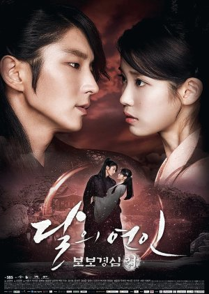

Cha Dal Gun becomes an awakened tiger in the face of his nephew’s death in a mysterious plane crash. As an orphan himself, he had raised his nephew singlehanded.....
☆☆☆☆☆
9.1
Flower of Evil
Korean Drama, 16 episodes
Although Baek Hee Sung is hiding a dark secret surrounding his true identity, he has established a happy family life and a successful career. He is a loving father.....
☆☆☆☆☆
9.0
Crash Landing on You
Korean Drama, 16 episodes
After getting into a paragliding accident, South Korean heiress Yoon Se Ri crash lands in North Korea. There, she meets North Korean army officer Ri Jung Hyuk.....
☆☆☆☆☆
8.8
Love and Redemption
Chinese Drama, 59 episodes
A thousand years since the battle between the demons and heavens took place, the souls of the Star of Mosha and the God of War are sent to the mortal realm to......
☆☆☆☆☆

8.7
Scarlet Heart Ryeo
Korean Drama, 20 episodes
When a total eclipse of the sun takes place, Go Ha Jin is transported back in time to the start of the Goryeo Dynasty of Korea during King Taejo's rule. She wakes up to.....
☆☆☆☆☆
8.6
Run For Young
Chinese Drama, 16 episodes
A story about the youth of this millennium follows a group of students who encounter ups and downs in the marathon of life. Ma Tian who comes from a well-off fa.....
☆☆☆☆☆
8.7
Descendants of the Sun
Korean Drama, 16 episodes
A love story that develops between a surgeon and a special forces officer. Kang Mo Yeon is a pretty and assertive woman who works as a cardiothoracic surgeon at Haesung.....
☆☆☆☆☆
8.6
365: Repeat the Year
Korean Drama, 24 episodes
A story where ten people get the chance to go back in time by one year, but unexpectedly mysterious situations start to arise when their fates are changed and twisted in.....
☆☆☆☆☆
9.0
Joy of Life
Chinese Drama, 46 episodes
Fan Xian grew up in a small town by the sea with his grandmother. After an unexpected visit from a poison master, his peaceful life becomes filled with hardships....